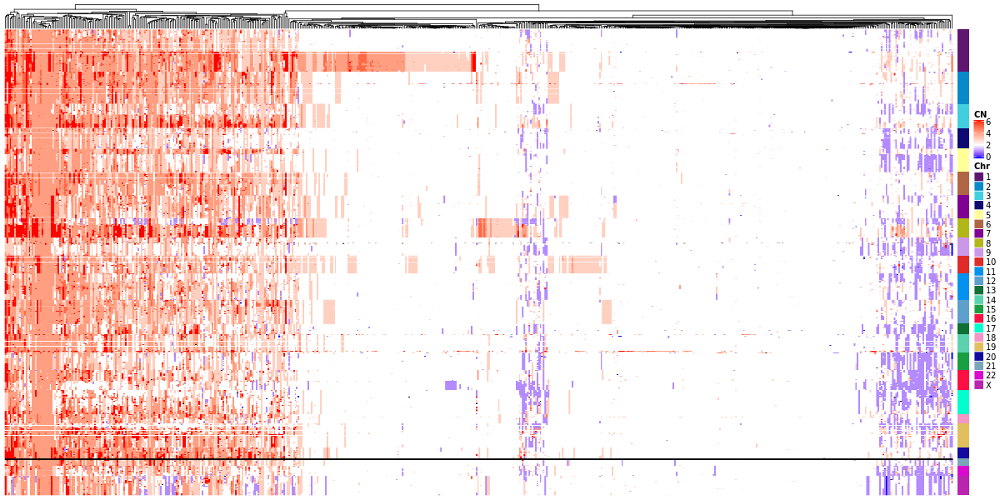
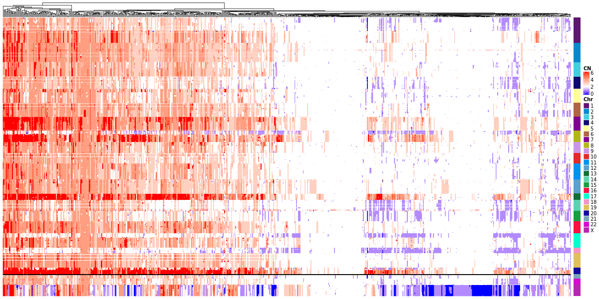
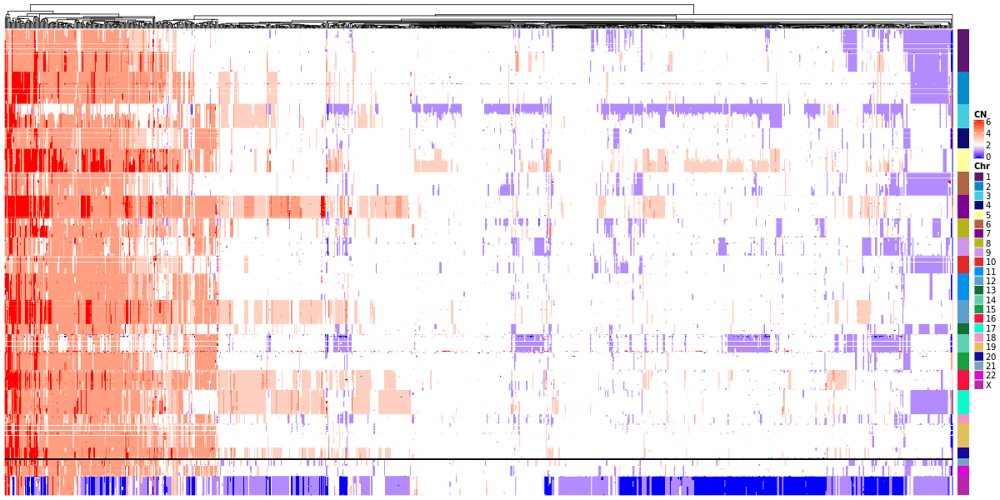
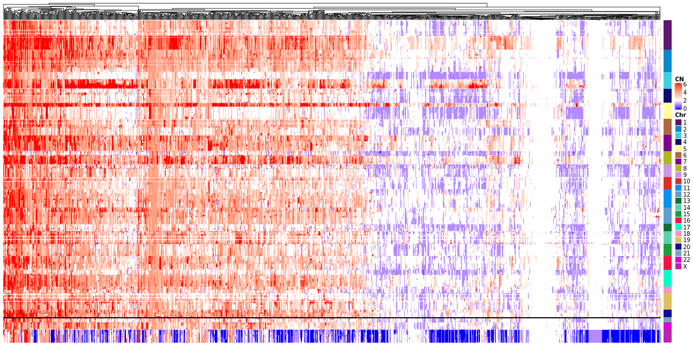
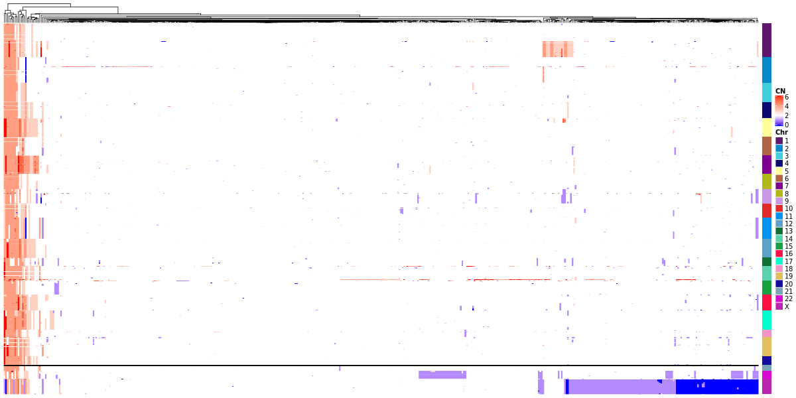

Evaluación de la regulación trans en cáncer: un enfoque de biología de sistemas
M. en C. Diana Elisa García Cortés
Tutor principal: Dr. Jesús Espinal Enriquez
Comité tutor:
Dr. Alfredo Hidalgo Miranda
Dr. Gustavo Martínez-Mekler
 Espinal-Enríquez, J., Fresno, C., Anda-Jáuregui, G., & Hernández-Lemus, E. (2017).
RNA-Seq based genome-wide analysis reveals loss of inter-chromosomal regulation in breast cancer.
Scientific Reports, 7(1), 1–19.
Espinal-Enríquez, J., Fresno, C., Anda-Jáuregui, G., & Hernández-Lemus, E. (2017).
RNA-Seq based genome-wide analysis reveals loss of inter-chromosomal regulation in breast cancer.
Scientific Reports, 7(1), 1–19.
Pregunta de investigación
Si la regulación inter-cromosómica se pierde en cáncer de mama. ¿Se pierde también en otros tipos de cáncer?
Objetivo General
Evaluar la regulación transcripcional inter e intra-cromosómica en diferentes tipos de cáncer mediante un enfoque de biología de sistemas.
Objetivos Específicos
- Construir redes de co-expresión genética con datos de RNA-Seq de tejido tumoral y tejido sano para diferentes tipos de cáncer.
- Identificar la localización cromosómica de los genes que resulten relacionados en dichas redes.
- Comparar la proporción de interacciones inter e intra-cromosómicas en las redes obtenidas.
- Analizar si la pérdida de regulación inter-cromosómica es un fenómeno generalizado en cáncer.
Meta-metodología
- Implementar una metodología para evaluar la pérdida de co-expresión inter-cromosómica que pueda aplicarse en distintos tejidos.
- Evaluar las contribuciones de algunos mecanismos de regulación alterados en el fenómeno de pérdida de la co-expresión a larga distancia.
- Evaluar la pérdida de regulación a larga distancia en otros tipos de cáncer.
Subtipos de cáncer de mama
Metodología

Metodología
Metodología

|

|

|
|

|
|

|
|
La co-expresión es dependiente de la distancia
Características de los patrones de co-expresión en subtipos de cáncer de mama:
- La fuerza de la co-expresión en pares de genes depende de su distancia física
La co-expresión es dependiente de la distancia
Características de los patrones de co-expresión en subtipos de cáncer de mama:
- Hay un desbalance en la proporción de interacciones intra-/inter-cromosómicas en las redes de co-expresión

La co-expresión es dependiente de la distancia
Características de los patrones de co-expresión en subtipos de cáncer de mama:
- Emergen regiones con alta densidad de interacciones de co-expresión
Cromosoma 8

La co-expresión es dependiente de la distancia
Características de los patrones de co-expresión en subtipos de cáncer de mama:
- Las regiones de alta co-expresión son preferentemente intra-citobanda

La co-expresión es dependiente de la distancia
Características de los patrones de co-expresión en subtipos de cáncer de mama:
- La fuerza de la co-expresión en pares de genes depende de su distancia física
- Hay un desbalance en la proporción de interacciones intra-/inter-cromosómicas en las redes de co-expresión
- Emergen regiones con alta densidad de interacciones de co-expresión
- Las regiones de alta co-expresión son preferentemente intra-citobanda
Los subtipos de cáncer de mama presentan diferentes patrones de pérdida de co-expresión inter-cromosómica.
Además
- La metodología para el análisis de co-expresión y dependencia con la distancia es generalizable.
-
Aprendí sobre el proceso de preparación de un artículo.
- Contar una historia coherente y autocontenida.
- Delimitar el alcance.
- El proceso puede ser largo.
- En este momento estamos describiendo el fenómeno.
- Estamos evaluando sus posibles implicaciones y los procesos que lo promueven.
- Múltiples proyectos involucrados.
Meta-metodología
- Implementar una metodología para evaluar la pérdida de co-expresión inter-cromosómica que pueda aplicarse en distintos tejidos.
- Evaluar las contribuciones de algunos mecanismos de regulación alterados en el fenómeno de pérdida de la co-expresión a larga distancia.
- Evaluar la pérdida de regulación a larga distancia en otros tipos de cáncer.
Luminal A breast cancer co-expression network: Structural and functional alterations
Asociar las características topológicas de la red con mecanismos de regulación de la transcripón posiblemente alterados.
La red de co-expresión del subtipo Luminal A tiene más similitud con la red del fenotipo sano. La pérdida de co-expresión inter-cromosomal es menos severa.
Applications and Methods in Genomic Networks. Frontiers in Genetics.
Primera observación
La estructura de comunidades de la red confirma la pérdida de co-expresión inter-cromosomal
Comunidades: subconjuntos de nodos con una mayor densidad de conexión entre ellos que con el resto de la red.
La estructura de comunidades de la red confirma la pérdida de co-expresión inter-cromosomal
Comunidades: subconjuntos de nodos con una mayor densidad de conexión entre ellos que con el resto de la red.

Fracción de interacciones intra-chromosómicas:
13/17 = 0.76La estructura de comunidades de la red confirma la pérdida de co-expresión inter-cromosomal
Comunidades: subconjuntos de nodos con una mayor densidad de conexión entre ellos que con el resto de la red.

¿Hay asociación de procesos biológicos en las comunidades?
| Sano | Luminal A | |||
|---|---|---|---|---|
| Inter | Intra | Inter | Intra | |
| * | 300 | 71 | 87 | 615 |
| $ | 19 | 0 | 20 | 9 |
| & | 612 | 0 | 792 | 136 |
& = términos asociados Gene Ontology - Biological Processes p-value < 0.005

¿Hay asociación de procesos biológicos en las comunidades?
- Fenotipo sano:
- Procesos asociados a metabolismo, ciclo celular y funciones mitocondriales.
-
Luminal A. Comunidades inter-cromosómicas (-trans):
- Respuesta inmune, regulación de la transcripción y de división celular.
-
Luminal A. Comunidades intra-cromosómicas (-cis):
- Familias de genes localizadas en las mismas regiones en el genoma como los genes HOXA, HOXB y HOXC y Protocaderinas
¿Las comunidades con procesos biológicos asociados estan diferencialmente expresados?

¿Las comunidades con procesos biológicos asociados tienen interacciones relacionadas a factores de transcripción?

¿Las comunidades con procesos biológicos asociados tienen regiones con picos de deleción o amplificación?

¿Las comunidades intra-cromosómicas tienen regiones con picos de deleción o amplificación?
¿Las comunidades intra-cromosómicas están delimitadas por sitios de unión a CTCFs?

Conclusiones
- Procesos biológicos asociados con las comunidades trans-, algunos compartidos
con el fenotipo sano.
- Aunque los asociados a las comunidades cis- tienen importancia para el fenotipo.
Meta-metodología
- Implementar una metodología para evaluar la pérdida de co-expresión inter-cromosómica que pueda aplicarse en distintos tejidos.
- Evaluar las contribuciones de algunos mecanismos de regulación alterados en el fenómeno de pérdida de la co-expresión a larga distancia.
- Evaluar la pérdida de regulación a larga distancia en otros tipos de cáncer.
Metodología
| Tipo de Tejido |
No. de muestras | ||
|---|---|---|---|
| Sano | Tumor | ||
| Riñón | 250 | 1204 | |
| Mama | 113 | 1109 | |
| Pulmón | 108 | 1035 | |
| Tiroides | 58 | 505 | |
| Próstata | 52 | 499 | |
| Colorrectal | 51 | 754 | |
| Útero | 50 | 740 | |
| Hígado | 50 | 374 | |
|
|
|
|
|
|
|
|
|
|
|
|
Para cada tipo de cáncer
- Valores promedio co-expresión por cada 5Mbps
- Redes
- Matrices de alteración en número de copias
Valores promedio de co-expresión por cada 5Mbps
Útero

Valores promedio de co-expresión por cada 5Mbps
Colon

Valores promedio de co-expresión por cada 5Mbps
Riñón

Valores promedio de co-expresión por cada 5Mbps
Pulmón

Valores promedio de co-expresión por cada 5Mbps
Tiroides

Redes de co-expresión

Redes de co-expresión

Redes de co-expresión

Redes de co-expresión

Redes de co-expresión

Matriz de Alteración en número de copias
Útero
Matriz de Alteración en número de copias
Colon
Matriz de Alteración en número de copias
Riñón
Matriz de Alteración en número de copias
Pulmón
Matriz de Alteración en número de copias
Tiroides
Conclusiones preliminares
- La pérdida de co-expresión a larga distancia es un fenómeno consistente, medible y reproducible presente en todos los perfiles estudiados.
-
Hay una alteración global en las interacciones del transcriptoma.
- Se prefieren caminos cortos.
-
Hay implicaciones a largo plazo en el fenotipo.
- O al menos, el fenómeno diferencía a dos fenotipos diferentes.
- Hay contribución de múltiples mecanismos alterados.
- Su prevalencia sugiere una característica habilitadora del programa transcripcional.
Este semestre
-
Analizar las muestras de los tejidos restantes: próstata, hígado.
- Evaluar agregar tejidos con menos de 50 muestras en sanos.
-
Obtener:
- Redes
- Matrices de CNVs
- Matrices de Expresión
- Expresión diferencial
-
Preparar artículo.
- ¿Qué papel juegan los CNVs en las redes?
- ¿Hay alteraciones asociadas a los fenotipos en las redes y las matrices de CNVs?
¡Gracias!
Información Mutua
- Es una medida de dependencia estadística entre dos variables aleatorias.
- Expresa qué tanta información nos dice una variable sobre otra.
¿Qué tanto el conocer los valores de expresión del gen A en el conjunto de mis muestras me ayuda para conocer los valores de expresión del gen B?
- Reducción de incertidumbre de una variable aleatoria debido al conocimiento debido al conocimiento del valor de otra variable.
Entropía
- En forma cualitativa, es una medida de incertidumbre.
- Caracteriza qué tan difícil de predecir es una variable aleatoria.
- La variable X es el número ganador en una ruleta.
- La variable Y es el número ganador en una dado.
La entropía de X es mayor que la entropía de Y
-
Aunque no solo se toman en cuenta los posibles valores, sino también su frecuencia
- Un dado cargado donde 90% de las tiradas resulta en 2 tiene menor entropía que un dado sin cargar.
Entropía
No es un concepto vago, tiene una deficinión matemá precisa:
Si una variable aleatoria $X$ toma valores en el conjunto $\chi = {x_1, x_2, x_3, \dots ,x_n }$, entonces la entropía de la variable aleatoria $X$ se calcula como
\[\begin{aligned} H(X) = - \sum_{x \in \chi} P(x) \log P(x) \end{aligned} \]Si tomamos $\log$ en base 2, la entropía se expresa en bits.
Entropía
Pero estábamos hablando de dos variables.
Entropía conjunta: Calcular entropía sobre todos los posibles pares de las variables aleatorias.
\[\begin{aligned} H(X, Y) = - \sum_{x \in \chi} \sum_{y \in \psi} P(x,y) \log P(x,y) \end{aligned} \]Entropía condicional: La entropía de una variable aleatoria dada otra.
\[\begin{aligned} H(X| Y) = - \sum_{x \in \chi} P(x) H(Y|X=x) \end{aligned} \]Entropía
Ambas están relacionadas por las siguientes igualdades
\[\begin{aligned} H(X, Y) = H(X) + H(X|Y) \end{aligned} \] \[\begin{aligned} H(X|Y) \neq H(Y|X) \end{aligned} \] \[\begin{aligned} H(X) - H(X|Y) = H(Y) - H(Y|X) \end{aligned} \]Y esto es la información mutua
\[\begin{aligned} I(X;Y) = H(Y) - H(Y|X) = H(Y) + H(X) - H(X|Y) \end{aligned} \]Reducción en la entropía
Información Mutua


RNA-seq
 Griffith M, Walker JR, Spies NC, Ainscough BJ, Griffith OL (2015)
Informatics for RNA Sequencing:
A Web Resource for Analysis on the Cloud. PLoS Comput Biol 11(8):e1004393.
doi: 10.1371/journal.pcbi.1004393.
Griffith M, Walker JR, Spies NC, Ainscough BJ, Griffith OL (2015)
Informatics for RNA Sequencing:
A Web Resource for Analysis on the Cloud. PLoS Comput Biol 11(8):e1004393.
doi: 10.1371/journal.pcbi.1004393.
RNA-seq por Illumina
 Illumina.
An introduction to Next-Generation Sequencing Technology
www.illumina.com/technology/next-generation-sequencing.html
Illumina.
An introduction to Next-Generation Sequencing Technology
www.illumina.com/technology/next-generation-sequencing.html
RNA-seq por Illumina
 Illumina.
An introduction to Next-Generation Sequencing Technology
www.illumina.com/technology/next-generation-sequencing.html
Illumina.
An introduction to Next-Generation Sequencing Technology
www.illumina.com/technology/next-generation-sequencing.html